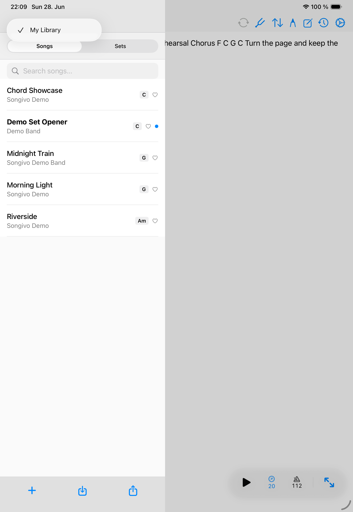

Charts
ChordPro
ChordPro songs give Songivo editable lyrics, chords, sections, and metadata that can be transposed without rewriting the original chart.

Edit a ChordPro song
- Open the song and choose Edit.
- Update lyrics, chords, sections, or directives.
- Use the assist toolbar for common section and directive helpers.
- Save and return to the viewer to check the rendered chart.
Transpose and notation
Songivo can display transposed chords without changing the stored source text. Use song-level transpose for the default chart and setlist slot transpose when one show needs a different key.
- Standard notation for common chord names.
- Nashville notation for number-based charts.
- Roman notation for functional analysis workflows.
Display options
Adjust font size, color themes, chord and lyric styling, split-page behavior, and chord block alignment from the song and appearance settings.